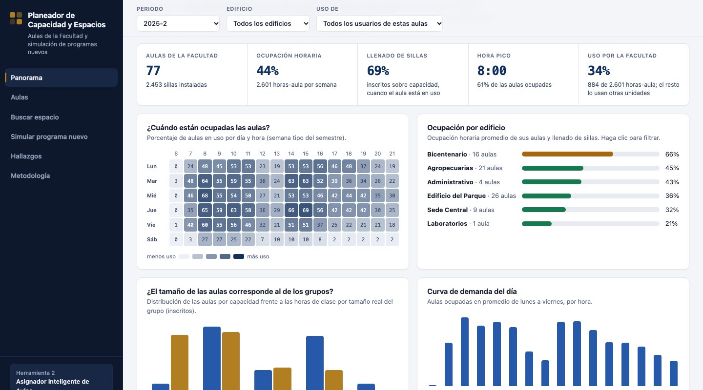
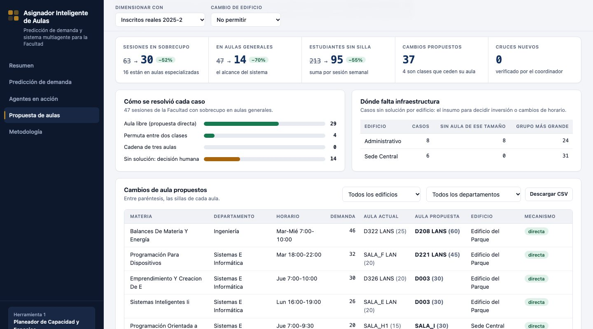
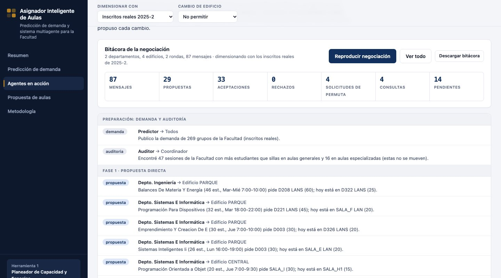

Dos herramientas para la Facultad, sobre su programación real de 2025: una mide la capacidad de sus aulas y otra propone cómo asignarlas.

Responde cuánta capacidad tienen las aulas de la Facultad, dónde hay espacio libre y si un programa nuevo cabe en ellas.
Ingeniería en Inteligencia Artificial, jornada diurna, en los dos edificios donde hoy dicta la Facultad.
Un modelo estima cuántos estudiantes llegarán a cada grupo de la Facultad y un sistema de agentes negocia los cambios de aula que eliminan sobrecupos.


El alcance es la Facultad de Inteligencia Artificial e Ingenierías; no es una estimación para toda la Universidad. El modelo se entrenó con dos periodos y no incluye la deserción, el avance de los estudiantes de un semestre a otro ni la entrada de estudiantes nuevos, que varía cada semestre. Las cifras muestran el potencial del enfoque y no reemplazan la proyección de matrícula de cada programa. La asignación definitiva la aprueba la oficina responsable.